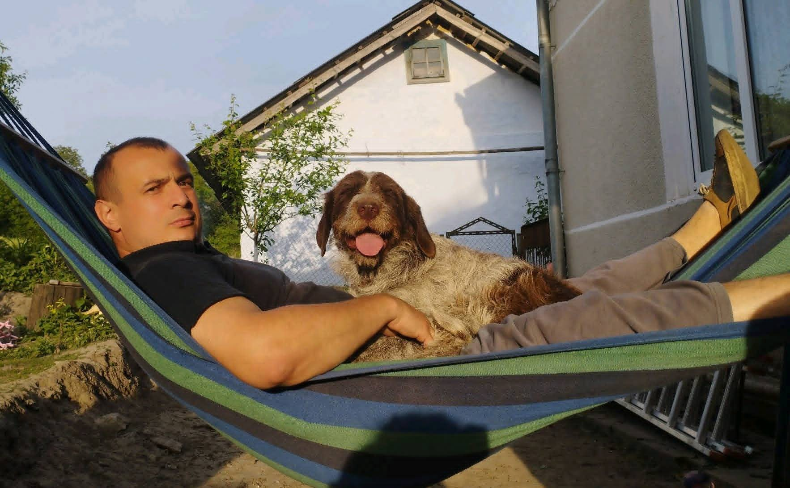
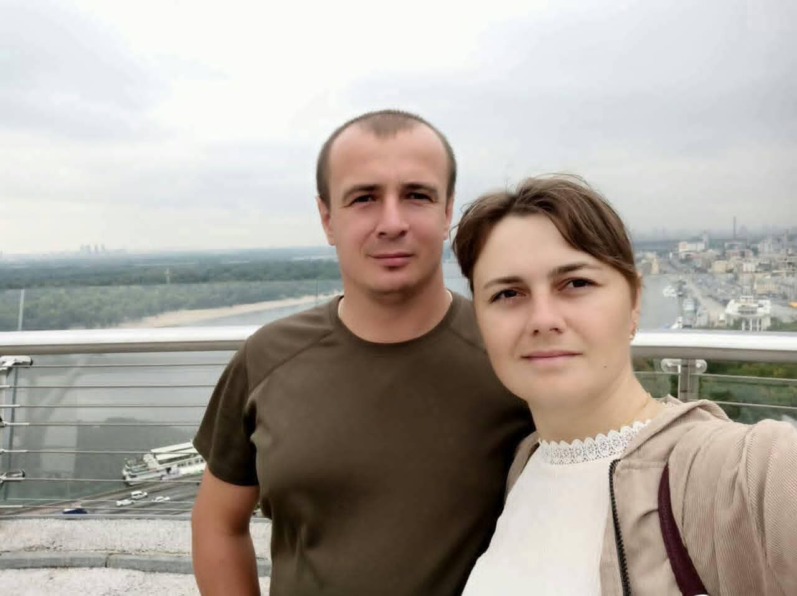

FILE 02 · PHOTO ARCHIVE
Наші
спогади.
Кілька кадрів із великої історії.

01 / SUMMER
02 / MOMENT

03 / TOGETHER 04 / PORTRAIT
04 / PORTRAIT
05 / OUTDOORS
 06 / BEEKEEPER
06 / BEEKEEPER
07 / 39
ARCHIVE NOTE
Найкращі
фотографії —
ще попереду.
Бо фотографій може бути багато. Але найважливіше те, що за ними: люди, моменти, сміх і звичайні дні, які потім виявляються найціннішими.